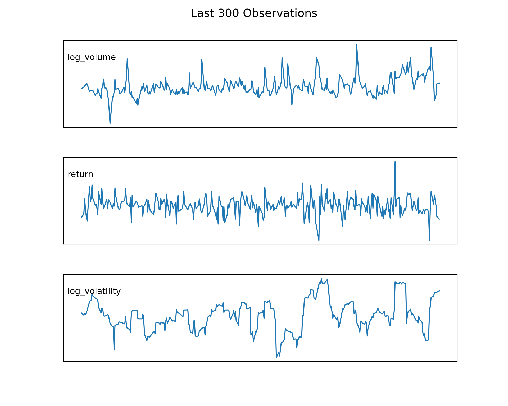

Recurrent Neural Network for Time Series Forecasting
Show the code
# === Imports ===import osimport numpy as npimport pandas as pdimport tensorflow as tfimport matplotlib.pyplot as pltfrom sklearn.preprocessing import StandardScalerfrom sklearn.model_selection import train_test_splitfrom sklearn.metrics import mean_squared_error, mean_absolute_error, r2_scorefrom statsmodels.tsa.ar_model import AutoReg# Ensure eager execution (important for reticulate/Quarto)tf.config.run_functions_eagerly(True)
This tutorial demonstrates how to use recurrent neural networks to forecast financial time series data. We will work with daily Dow Jones data and predict the next day’s log trading volume using information from the previous ten days. The analysis includes two recurrent neural architectures—RNN and GRU—used to forecast next-day log trading volume.
Feature engineering
Before training the models, we perform several feature-engineering steps to extract informative signals from the raw data. We compute the log of trading volume, daily log-returns, and a 10-day rolling estimate of volatility. These features capture trading activity, price movements, and short-term uncertainty, forming the three inputs used by the models.
Show the code
# === Load data ===# Example: file path to local CSV (adjust to your environment)data_path = os.path.join( os.path.expanduser("~\\Documents\\BOI_DL_website"),"data\\dow_jones_data.csv")raw_df = pd.read_csv(data_path)# === Feature engineering ===col_names = ["Volume", "Close"]data = raw_df[["Date"] + col_names].copy()data['log_volume'] = np.log(data['Volume'])data['return'] = np.log(data['Close'] / data['Close'].shift(1))data['log_volatility'] = np.log(data['return'].rolling(window=10).std() +1e-6)data = data.dropna().reset_index(drop=True)data = data.drop(col_names, axis=1).copy()
Show the code
import pandas as pdimport matplotlib.pyplot as pltdata['Date'] = pd.to_datetime(data['Date'])N =300df = data.tail(N)fig, axes = plt.subplots(3, 1, figsize=(10, 8))cols = ['log_volume', 'return', 'log_volatility']for ax, col inzip(axes, cols): ax.plot(df['Date'], df[col]) ax.grid(True)# Remove axis ticks ax.set_xticks([]) ax.set_yticks([])# Add a clean left-side label ax.text(0.01, 0.85, col, transform=ax.transAxes, fontsize=12, va='top', ha='left')# Suptitle with no overlapfig.suptitle(f"Last {N} Observations", fontsize=16, y=0.98)plt.subplots_adjust(top=0.90, hspace=0.35)plt.show()

We construct input sequences of 10 consecutive time steps, where each sequence is used to predict the following observation. After building these sequences, we split the dataset into training and testing subsets to evaluate model performance.
Because neural networks are sensitive to the scale of their inputs, we standardize both the feature sequences and the target variable. Each feature is transformed to have zero mean and unit variance based on the training set only. This ensures stable training and prevents information from the test set from leaking into the model during preprocessing.
We now build two recurrent neural network architectures commonly used for sequential data. Each model receives a 10×3 input window (log volume, return, and log volatility) and predicts the next day’s log volume:
SimpleRNN — a basic recurrent unit suitable for short-range dependencies.
GRU — a gated recurrent unit capable of capturing longer patterns with fewer parameters than LSTM.
Both models use 12 hidden units and are trained for 30 epochs.
Models fit
Show the code
# ==============================================================# Recurrent Neural Networks for Financial Time Series Forecasting# Forecast next-day log volume using past values of# log_volume, return, and log_volatility# ==============================================================# === Build and train models ===LEARNING_RATE =1e-4EPOCHS =30BATCH_SIZE =32INPUT_SHAPE = (10, 3)def build_model(cell): model = tf.keras.Sequential([ cell(12, activation='tanh', input_shape=INPUT_SHAPE), tf.keras.layers.Dense(1) ]) optimizer = tf.keras.optimizers.Adam(learning_rate=LEARNING_RATE) model.compile(optimizer=optimizer, loss='mse')return modelmodel_rnn = build_model(tf.keras.layers.SimpleRNN)model_gru = build_model(tf.keras.layers.GRU)def train_model(model, X, y):return model.fit( X, y, epochs=EPOCHS, batch_size=BATCH_SIZE, validation_split=0.2, verbose=0 )hist_rnn = train_model(model_rnn, X_train, y_train_scaled)hist_gru = train_model(model_gru, X_train, y_train_scaled)
After training all models, we evaluate their performance on the test set using standard regression metrics. These metrics quantify different aspects of forecast accuracy:
RMSE (Root Mean Squared Error): penalizes larger errors more heavily.
MAE (Mean Absolute Error): reflects typical forecast error in the original units.
R² (Coefficient of Determination): measures how much of the variance in the true values is explained by the model.
Comparing these values across the two recurrent models allows us to assess how SimpleRNN and GRU differ in accuracy and whether the additional gating mechanisms in GRU provide a measurable improvement.
Model RMSE MAE R²
GRU 0.225110 0.160243 0.113645
SimpleRNN 0.250722 0.177727 -0.099516
To visually compare model behavior, we plot the first 200 predictions from the test set. This shows how closely the SimpleRNN and GRU models follow the true log-volume values over time. A well-performing model should track both the overall level and the short-term fluctuations of the series.